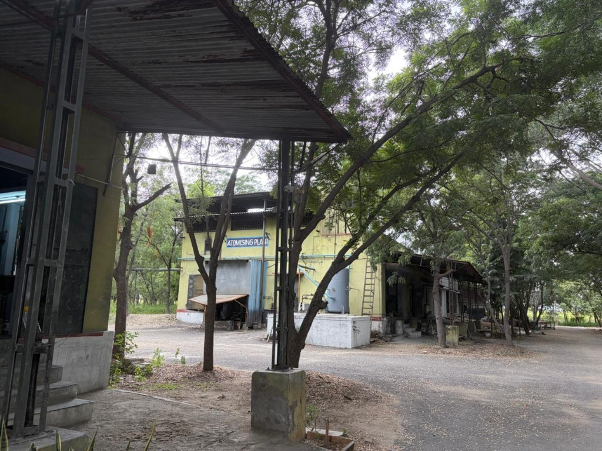

01 · AAC Block

AAC Block Manufacturing
Rohini Metals produces RMDG 60 and RMC 60 aluminium powder grades for AAC block manufacturing, delivering uniform hydrogen gas evolution and consistent cell structure.
View AAC Grades